Dynamic Map Books
or I got
99
branches and a mapbook is one
Jonah Adkins || Sr. Geospatial Analyst || GISi
@JonahAdkins
What is
NSGEM
?
NAVY Shore Geospatial Energy Module
Integrated With Existing NAVY Capabilities
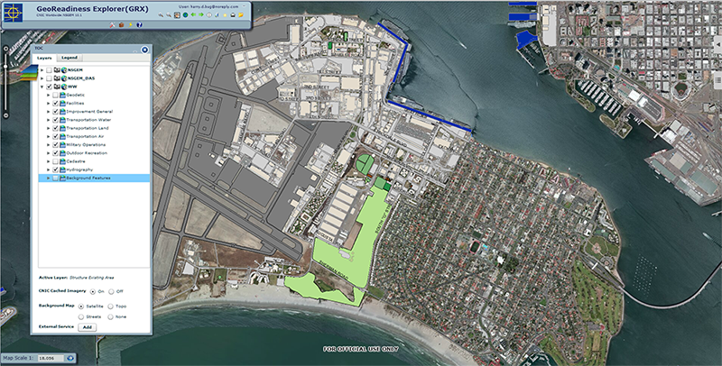
Integrated With Existing NAVY Capabilities
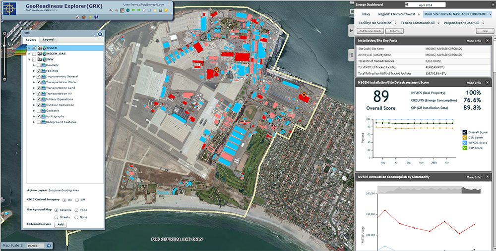
2014 Special Achievement In GIS Winner!
Map Book
Checklist
Lots of information to visualize
Short Development Time
Maps and
Charts
need to be data driven
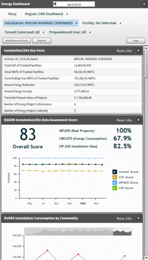
Fuzzy Math
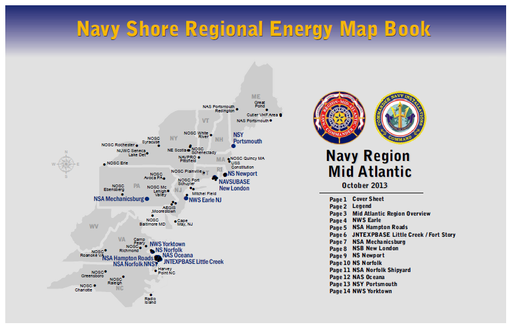
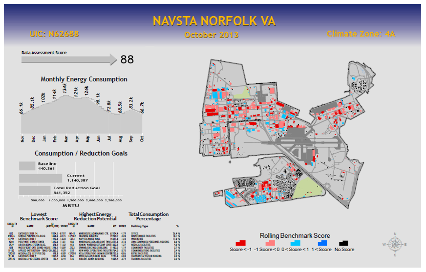
Real Talk
Map Book
Checklist II
Crystal Reports Visual Studio Runtime
SQL Selects On The Fly From DB To .NET Dataset
BYTES
Inserting AGS Map Image Via Byte Array Type Field In .NET Dataset
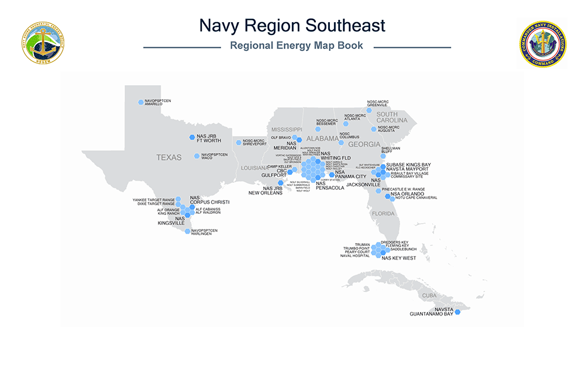
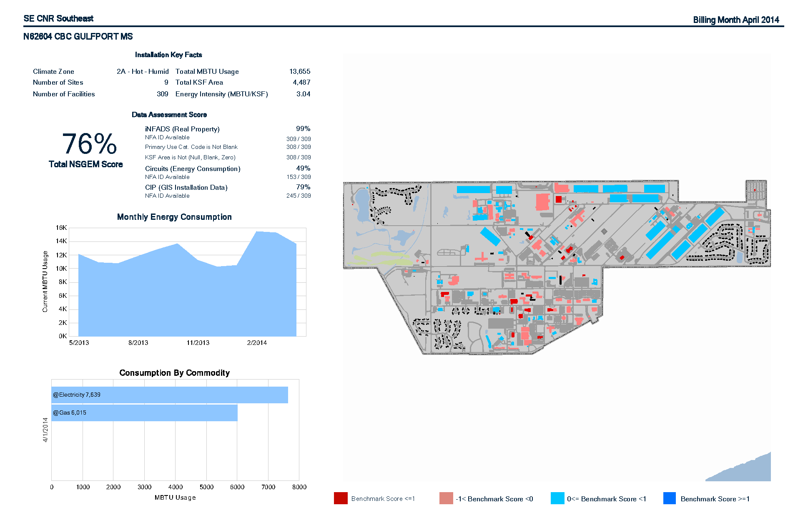
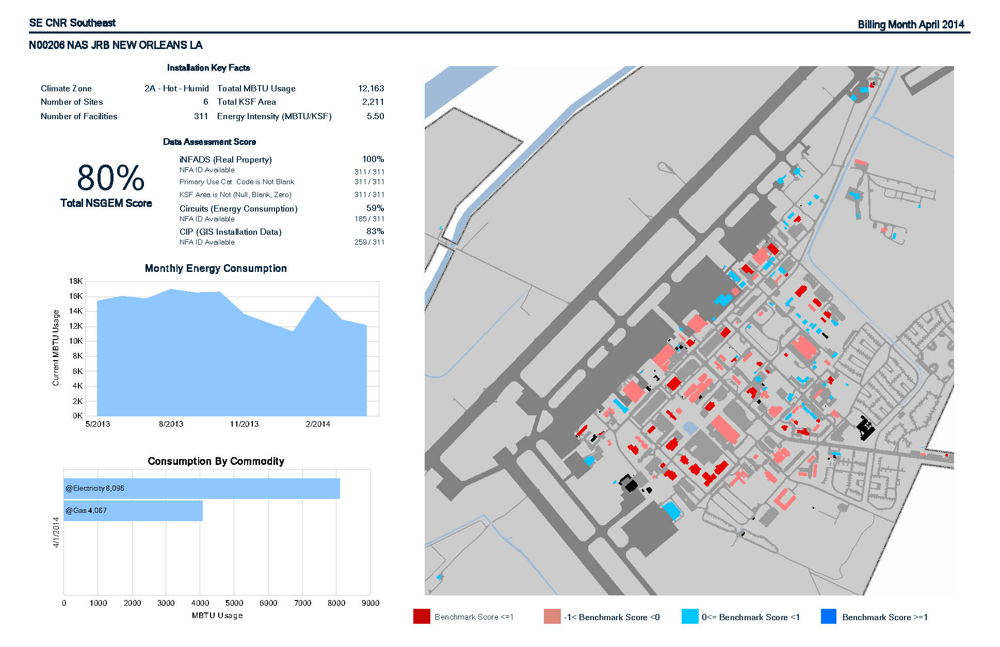
See Us At Booth 2317
Attend Our Talk On Tuesday, Omni D/E, 3:15pm
Check Us Out In The Map Gallery
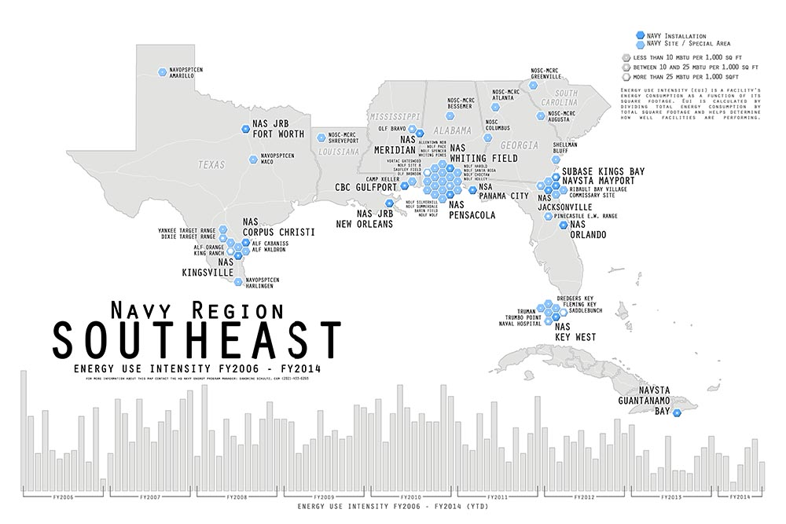 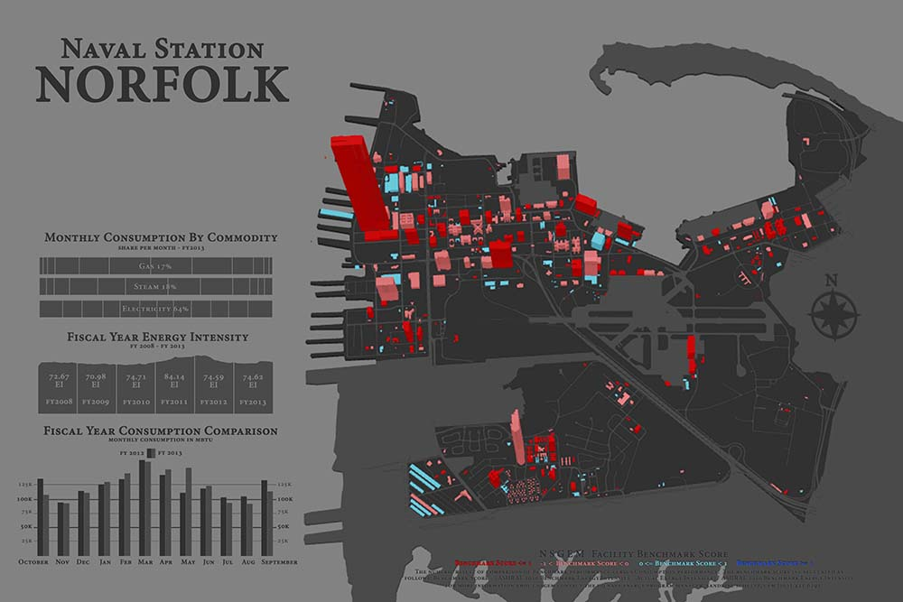 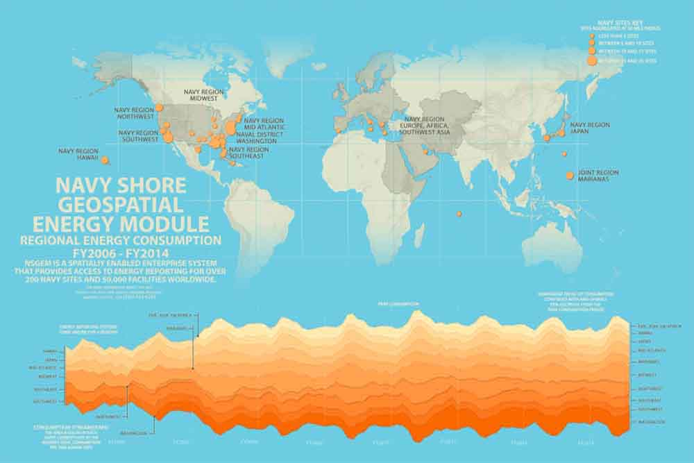